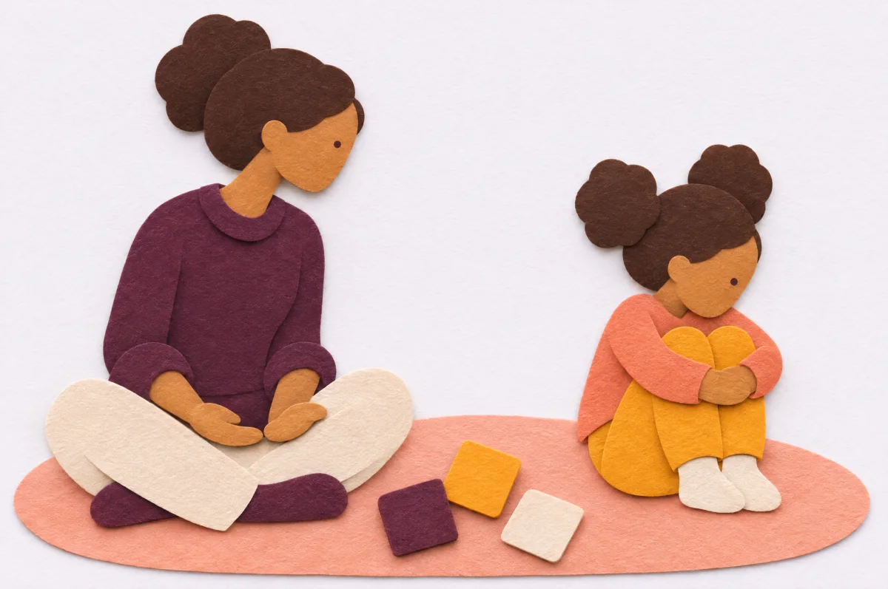
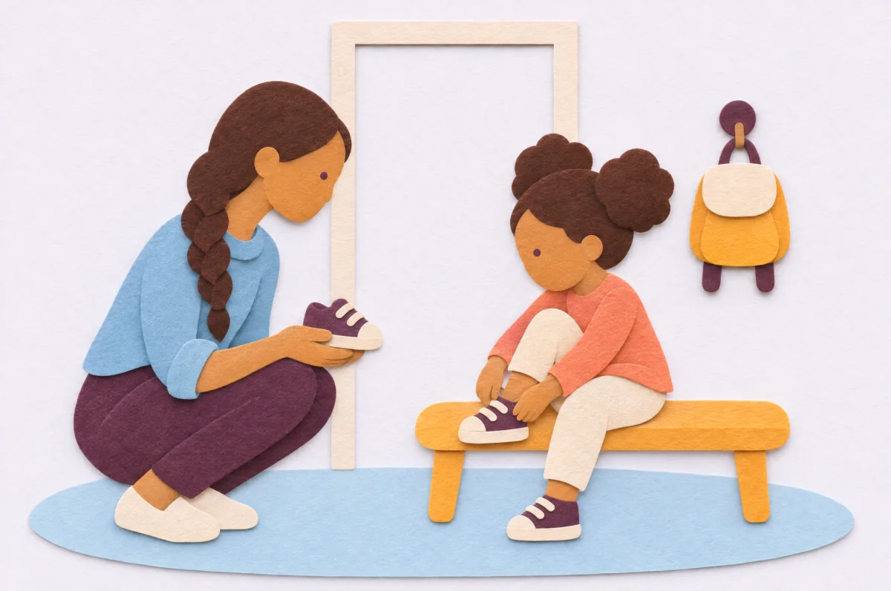
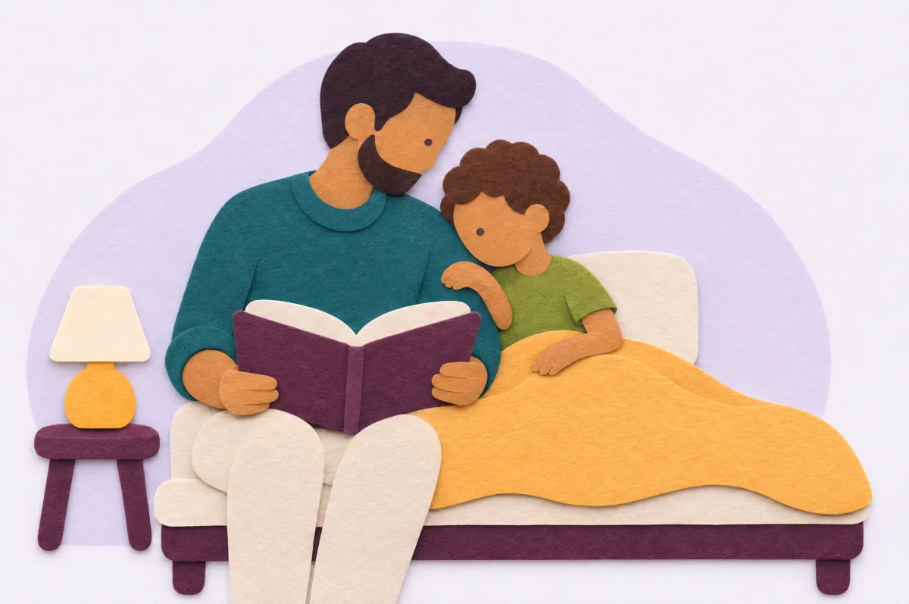
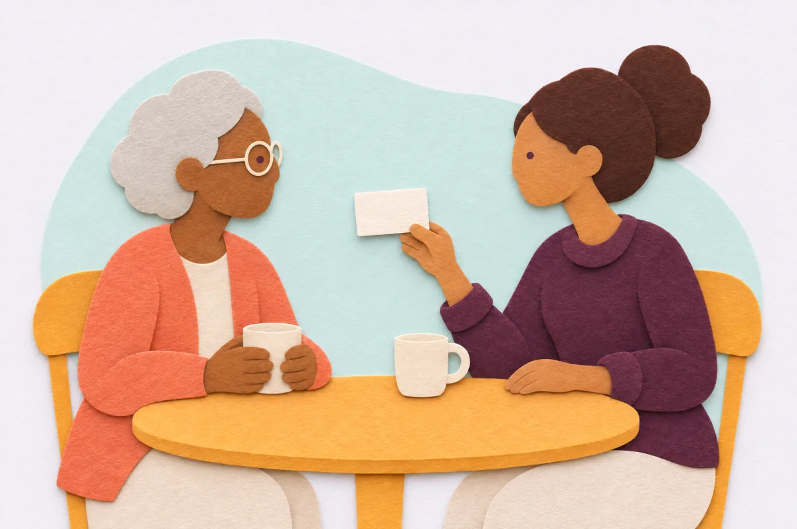

Estilo A: Colagem de papel
Papel artesanal recortado em camadas e fotografado de cima.





Nas telas do app
 Agora Sei
Agora SeiHoje com Lia
Vale para hoje: Brincar e participar10 minutosMudar
Brincar e participar
Comece por aquiBrincar ao lado, sem tomar o brinquedo
Mostrar interesse pela atividade sem exigir troca.
- 5 min
- Brinquedo conhecido
Por que apareceu para Lia: Cabe nos 10 min de hoje e usa brinquedo conhecido, que você marcou.
Ver como começar
Agora SeiFrustrações e emoçõesPara a hora
Estar perto sem exigir explicação
Oferecer presença em uma frustração leve, sem crise ou risco.
Antes de começar
- Confira na hora: a criança está bem e aceita companhia.
- Cerca de 2 min. Não precisa terminar.
Agora SeiSalvos de Lia
O que vocês querem reencontrar.
Deixar os itens da saída juntos
Rotinas e transições · 5 min
Escolher um livro para o momento tranquilo
Preparar a noite · 5 min
Combinar uma resposta entre adultos
Cuidadores em sintonia · 5 min
Três ideias guardadas
A caixa de Lia já tem por onde começar.
Na landing, em tamanho pequeno e num objeto
Saiba o que fazer hoje com seu filho. E entenda por quê.
Cards curtos com o passo a passo, o motivo e como adaptar.
Ver a demonstraçãoAs cinco cenas bem pequenas, como numa notificação ou num anúncio.
A caixa de fichas, que já existe em papel.
Onde ganha
É a mais própria: não se confunde com outro app. Conversa com a caixa de fichas, o carimbo e o selo, que já são de papel.
Onde perde
O rosto de um ponto só mostra pouca emoção. Na cena difícil, quem conta a história é a postura.
Risco de parecer infantil
Médio. Melhorou com o fundo frio e sem bochecha, mas feltro e papel ainda lembram material de escola.